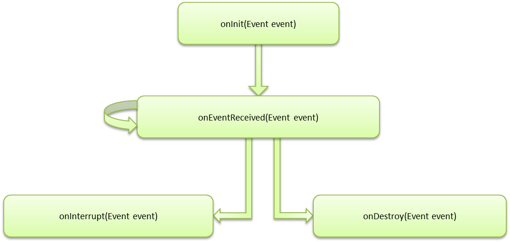

org.simplug.framework.model.Plugin
org.simplug.framework.model.Plugin
|
||||||||||
| PREV CLASS NEXT CLASS | FRAMES NO FRAMES | |||||||||
| SUMMARY: NESTED | FIELD | CONSTR | METHOD | DETAIL: FIELD | CONSTR | METHOD | |||||||||
java.lang.Object
public class Plugin
Core Plugin class. Every Plugin has to extend this class in order to work properly.
This class defines the lifecycle of a plugin and provides some methods made available
through the SimPlugContext interface. The lifecycle of a plugin is defined as follows:

| Constructor Summary | |
|---|---|
Plugin()
|
|
| Method Summary | |
|---|---|
void |
fireEvent(Event event)
This methods uses the method implemented by the SimPlugContext.fireEvent(Event)
interface in order to fire events on it own. |
SimPlugContext |
getContext()
Returns the context bound to this plugin or null if no context is bound. |
void |
onDestroy(DestroyEvent event)
This lifecycle method reacts on any DestroyEvent. |
void |
onEventReceived(Event event)
This method gets called when no other lifecycle method reacts on an event. |
void |
onInit(InitEvent event)
This lifecycle method reacts on any InitEvent. |
void |
onInterrupt(InterruptEvent event)
This lifecycle method reacts on any InterruptEvent. |
void |
receiveAndDelegateEvent(Event event)
This is the core method of a plugin to receive events from the framework. |
void |
setContext(SimPlugContext context)
Use this method to bind the plugin to another context different from the one supplied with the initial InitEvent. |
| Methods inherited from class java.lang.Object |
|---|
equals, getClass, hashCode, notify, notifyAll, toString, wait, wait, wait |
| Constructor Detail |
|---|
public Plugin()
| Method Detail |
|---|
public final void receiveAndDelegateEvent(Event event)
InitEventis delegated to the onInit(InitEvent) method.InterruptEvent is delegated to the onInterrupt(InterruptEvent) method.DestroyEvent is delegated to the onDestroy(DestroyEvent) method.onEventReceived(Event) method.
event - the event to receive and delegate to the plugins lifecycle methods.public final void fireEvent(Event event)
SimPlugContext.fireEvent(Event)
interface in order to fire events on it own.
event - the Event to be fired.SimPlugContext.fireEvent(Event)public void onInit(InitEvent event)
InitEvent.
event - the InitEvent to be used to initialize the plugin.public void onEventReceived(Event event)
event - the received Event.public void onInterrupt(InterruptEvent event)
InterruptEvent.InterruptEvent.
It is likely to receive a DestroyEvent right after the InterruptEvent.
event - the received InterruptEvent.public void onDestroy(DestroyEvent event)
DestroyEvent.
event - the received DestroyEvent.public SimPlugContext getContext()
null if no context is bound.
null if no context is bound.public void setContext(SimPlugContext context)
InitEvent.
context - the context this plugin should be bound to.
|
||||||||||
| PREV CLASS NEXT CLASS | FRAMES NO FRAMES | |||||||||
| SUMMARY: NESTED | FIELD | CONSTR | METHOD | DETAIL: FIELD | CONSTR | METHOD | |||||||||